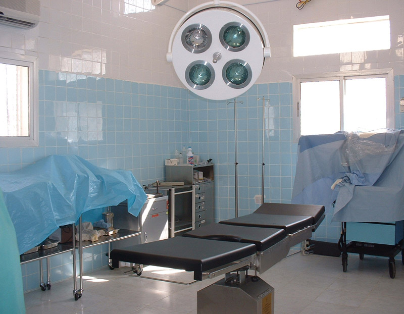

|

| >
Well—Planned Space Design.
Thoughtful, Warm and Courteous Services.
Professional ,Enthusiastic and Friendly Medical Personnel.
Ultra—Advanced Medical Facilities.
Computerized Express Services.
Medical Education and Research for Mankind.
Excellent Ancillary Services.
Thorough Consideration on the General Ward’s Design.
Social Services for the Publical Test Schemes.
|
|